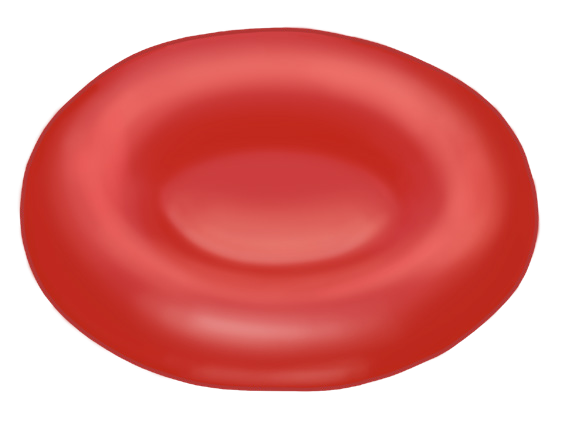

108
Student’s Book - Form Two
Biology for Secondary Schools
Plasma is also important for distributing heat to all parts of the body, regulating the pH of body fluids, and maintaining a normal balance of body fluids.
Red blood cells
These are red, round, biconcave cells with no nucleus when mature, as shown in Figure 5.8. They are also called erythrocytes. One millilitre of blood has approximately 5 to 6 million red blood cells. Erythrocytes are formed in the red bone marrow. Their lifespan is about 120 days. The liver and the spleen destroy old red blood cells and release haemoglobin for the formation of new cells. Haemoglobin is a red pigment in the erythrocytes, which gives them a red colour. Haemoglobin has a high affinity to oxygen.

Figure 5.8: Red blood cell
Functions of red blood cells
The red blood cells transport oxygen from the lungs to the body cells and carbon dioxide from the body cells to the lungs. The features that facilitate the adaptation of red blood cells to its function are the presence of haemoglobin pigment, its biconcave shape, and their large numbers.
Another feature is the lack of a nucleus, which increases the total surface area for loading respiratory gases. Their membrane is also very flexible and can bend in many directions without being damaged. This helps them to pass through the capillaries.
Transport of oxygen: In the lungs, there is a high concentration of oxygen gas. Haemoglobin combines with oxygen gas to form oxyhaemoglobin.
This is an unstable compound, which releases oxygen by diffusion when it reaches a tissue fluid that has a low concentration of oxygen gas. The formation of oxyhaemoglobin and the release of oxygen gas and haemoglobin can be shown using the following equation of a reversible reaction.
Haemoglobin
+
oxyhaemoglobin
oxygen
Oxygen diffuses out of the red blood cells, through the capillary walls to the tissue fluid.
Transport of carbon dioxide: This occurs when carbon dioxide combines with haemoglobin in the red blood cells to form carbaminohaemoglobin.
This combination occurs in the tissue fluid where the concentration of carbon dioxide is high. The formed compound is transported to the lungs where carbon dioxide is released and expelled from the body through exhalation.
08/04/2026 10:18:30